File: 000450.gt.txt (if the image is defective, simply delete all Arabic text and the line will be excluded)
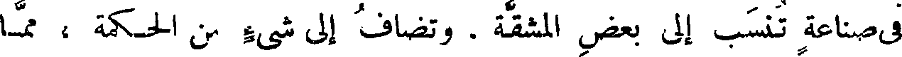
في صناعة تنسب إلى بعض المشقة ، وتضاف إلى شيء من الحكمة ، مما
File: 000451.gt.txt (if the image is defective, simply delete all Arabic text and the line will be excluded)
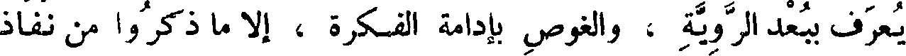
يعرف ببعد الروية ، والغوص بإدامة الفكرة ، إلا ما ذكروا من نفاذ
File: 000452.gt.txt (if the image is defective, simply delete all Arabic text and the line will be excluded)
ثقف(2) في التحريك للأوتار ، فإنه كان في ذلك مقدما ، وبه مذكورا .
File: 000453.gt.txt (if the image is defective, simply delete all Arabic text and the line will be excluded)
وأما الخصاء فهو أن يسل الخصيتين ، والوجاء أن توجأ العروق والخصيتان
File: 000454.gt.txt (if the image is defective, simply delete all Arabic text and the line will be excluded)
على حالهما . والمعصوب من التيوس الذي تعصب خصيتاه حتى تسقطا .
File: 000455.gt.txt (if the image is defective, simply delete all Arabic text and the line will be excluded)
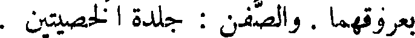
بعروقهما . والصفن : جلدة الخصيتين .
File: 000456.gt.txt (if the image is defective, simply delete all Arabic text and the line will be excluded)
( خصاء البهائم و الديكة )
File: 000457.gt.txt (if the image is defective, simply delete all Arabic text and the line will be excluded)
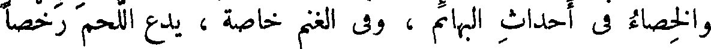
والخصاء في أحداث البهائم ، وفي الغنم خاصة ، يدع اللحم رخصا
File: 000458.gt.txt (if the image is defective, simply delete all Arabic text and the line will be excluded)
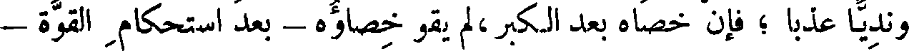
ونديا عذبا ؛ فإن خصاه بعد الكبر،لم يقو خصاؤه - بعد استحكام القوة -
File: 000459.gt.txt (if the image is defective, simply delete all Arabic text and the line will be excluded)
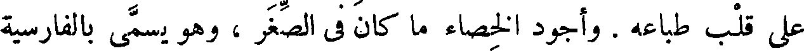
على قلب طباعه . وأجود الخصاء ما كان في الصغر ، وهو يسمى بالفارسية
File: 000460.gt.txt (if the image is defective, simply delete all Arabic text and the line will be excluded)
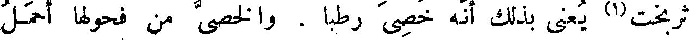
ثربخت(1) يعنى بذلك أنه خصى رطبا . والخصى من فحولها أحمل
File: 000461.gt.txt (if the image is defective, simply delete all Arabic text and the line will be excluded)
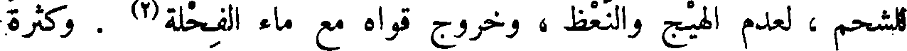
للشحم ، لعدم الهيج والنعظ ، وخروج قواه مع ماء الفحلة(2) . وكثرة
File: 000462.gt.txt (if the image is defective, simply delete all Arabic text and the line will be excluded)
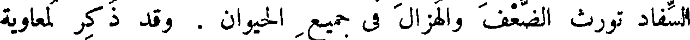
السفاد تورث الضعف والهزال في جميع الحيوان . وقد ذكر لمعاوية
File: 000463.gt.txt (if the image is defective, simply delete all Arabic text and the line will be excluded)
كثرة الجماع فقال : ما استهتر به أحد إلا رأيت ذلك في منته(3) .
File: 000464.gt.txt (if the image is defective, simply delete all Arabic text and the line will be excluded)
والديك يخصى ليرطب لحمه ويطيب ويحمل الشحم .
File: 000465.gt.txt (if the image is defective, simply delete all Arabic text and the line will be excluded)
( خصاء العرب لفحولة الإبل )
File: 000466.gt.txt (if the image is defective, simply delete all Arabic text and the line will be excluded)
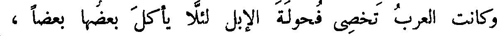
وكانت العرب تخصى فحولة الإبل لئلا يأكل بعضها بعضا ،
File: 000467.gt.txt (if the image is defective, simply delete all Arabic text and the line will be excluded)
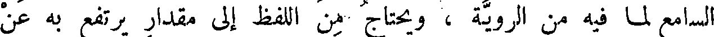
السامع لما فيه من الروية ، ويحتاج من اللفظ إلى مقدار يرتفع به عن
File: 000468.gt.txt (if the image is defective, simply delete all Arabic text and the line will be excluded)
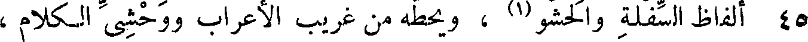
45 ألفاظ السفلة والحشو(1) ، ويحطه من غريب الأعراب ووحشي الكلام ،
File: 000469.gt.txt (if the image is defective, simply delete all Arabic text and the line will be excluded)
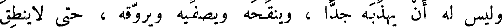
وليس له أن يهذبه جدا ، وينقحه ويصفيه ويروقه ، حتى لاينطق
File: 000470.gt.txt (if the image is defective, simply delete all Arabic text and the line will be excluded)
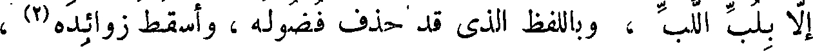
إلا بلب اللب ، وباللفظ الذي قد حذف فضوله ، وأسقط زوائده(2) ،
File: 000471.gt.txt (if the image is defective, simply delete all Arabic text and the line will be excluded)
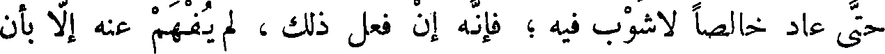
حتى عاد خالصا لا شوب فيه ؛ فإنه إن فعل ذلك ، لم يفهم عنه إلا بأن
File: 000472.gt.txt (if the image is defective, simply delete all Arabic text and the line will be excluded)
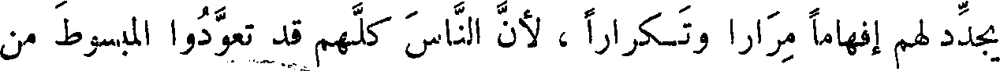
يجدد لهم إفهاما مرارا وتكرارا ، لأن الناس كلهم قد تعودوا المبسوط من
File: 000473.gt.txt (if the image is defective, simply delete all Arabic text and the line will be excluded)
الكلام ، وصارت أفهامهم لا تزيد على عاداتهم إلا بأن يعكس عليها
File: 000474.gt.txt (if the image is defective, simply delete all Arabic text and the line will be excluded)
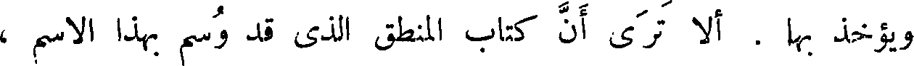
ويؤخذ بها . ألا ترى أن كتاب المنطق الذي قد وسم بهذا الاسم ،
File: 000475.gt.txt (if the image is defective, simply delete all Arabic text and the line will be excluded)
لو قرأته على جميع خطباء الأمصار وبلغاء الأعراب ، لما فهموا أكثره ،
File: 000476.gt.txt (if the image is defective, simply delete all Arabic text and the line will be excluded)
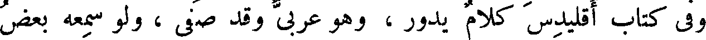
وفي كتاب إقليدس كلام يدور ، وهو عربي وقد صفي ، ولو سمعه بعض
File: 000477.gt.txt (if the image is defective, simply delete all Arabic text and the line will be excluded)
الخطباء لما فهمه ، ولا يمكن أن يفهمه من يريد تعليمه ، لأنه يحتاج إلى
File: 000478.gt.txt (if the image is defective, simply delete all Arabic text and the line will be excluded)
أن يكون قد عرف جهة الأمر ، وتعود اللفظ المنطقي الذي استخرج
File: 000479.gt.txt (if the image is defective, simply delete all Arabic text and the line will be excluded)
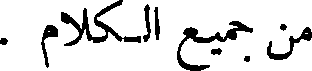
من جميع الكلام .
To Save: `Ctrl+s`, make sure to choose `Webpage, complete`!